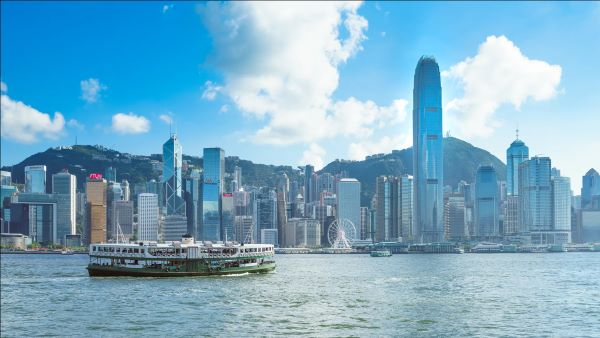
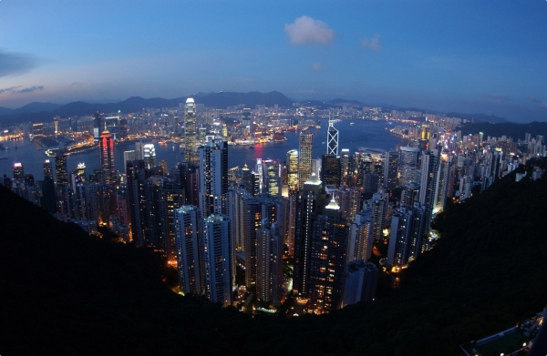

Victora Harbour is a natural landform harbour in Hong Kong separating Hong Kong Island in the south from the Kowloon Peninsula to the north. The harbour's deep, sheltered waters and strategic location on South China Sea were instrumental in Hong Kong's establishment as a British colony in 1841 and its subsequent development as a trading centre.
 